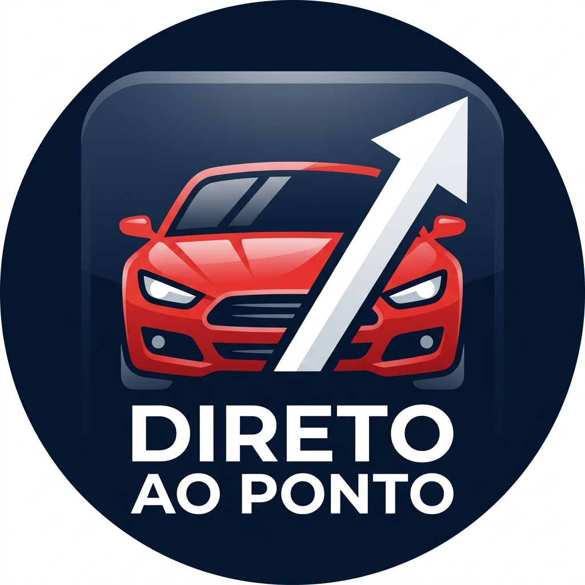

Meu primeiro post
Por Arthur Udovicc
Boas-vindas ao meu site! Aqui vou compartilhar dicas sobre carros e curiosidades sobre a área.
Mostrar que seu carro não é um bicho de 7 cabeças e coisas sobre carros

Por Arthur Udovicc
Boas-vindas ao meu site! Aqui vou compartilhar dicas sobre carros e curiosidades sobre a área.